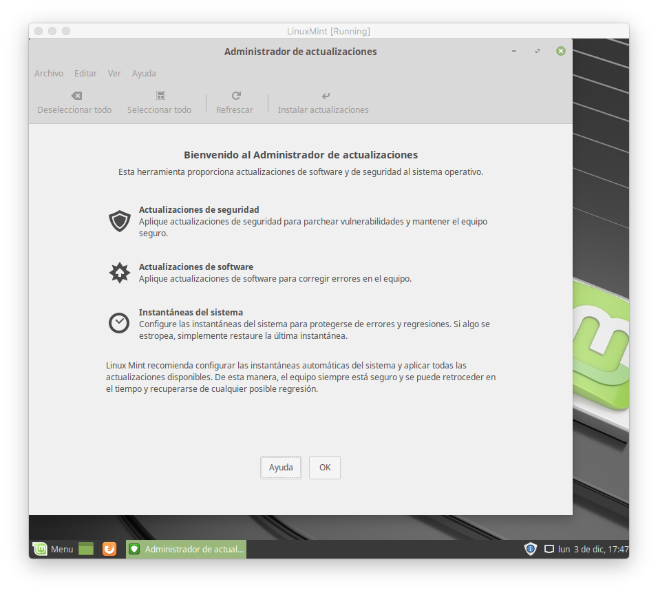
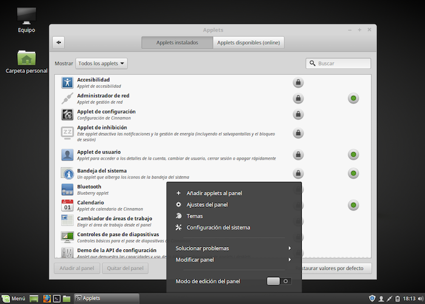

Primeros pasos
Una vez que hemos instalado Linux Mint, vamos a hacer una primera exploraración de lo que tenemos en nuestro ordenador.
Mint proporciona un sistema automático de actualizaciones. Lo primero será comprobar que nuestro software está al día, y descargar los últimos cambios.
Actualizaciones
Tras reiniciar el ordenador, se carga el sistema operativo recién instalado y se muestra la ventana de bienvenida sobre el escritorio. La cerramos.
Opcionalmente podemos desmarcar la casilla “Mostrar esta ventana al inicio”.
La barra inferior del escritorio es configurable y puede cambiar de aspecto. En principio vemos:
- a la izquierda, el icono de Mint. Pulsando sobre el mismo, se despliega el menú de aplicaciones
- seguidamente, varios iconos para ejecutar determinados programas
- las aplicaciones en ejecución
- a la derecha tenemos unos iconos con el estado de la conexión a Internet, volumen de sonido, batería y reloj. Pulsamos sobre el icono en forma de escudo, que sirve para controlar las actualizaciones:
Pantalla de bienvenida al sistema de actualizaciones. Pulsamos sobre el botón [OK].

Seguidamente se buscan y muestran las actualizaciones pendientes. Pulsamos en el botón Instalar actualizaciones:
Es posible que algunos paquetes a instalar requieran hacer cambios adicionales. Se nos pregunta:

Cualquier instalación requiere nuestra contraseña:
Descargando e instalando paquetes. Esto lleva tiempo:
Tras finalizar, se comprueba la existencia de más actualizaciones. La primera vez, el proceso se repetirá varias veces. Cuando no quedan más actualizaciones pendientes, se muestra:
Tras cerrar el Administrador de Actualizaciones, el icono de actualizaciones en la parte inferior del escritorio ha cambiado. Ahora el icono del escudo aparece con un carácter “√”
Explorando Mint
Comencemos por ver los iconos disponibles en la barra inferior del escritorio:
El primer icono por la izquierda suele ser el menú de aplicaciones. Seguidamente se muestra el icono para minimizar todas las ventanas y mostrar el escritorio, y a continuación, nuestras aplicaciones favoritas.
Veamos ahora algunas de las aplicaciones más interesantes:
- Navegador de Internet: pulsar en el menú > Internet > Firefox
- Para gestionar nuestro correo: pulsar en el menú > Internet > Thunderbird
- Para crear documentos de texto, hojas de cálculo, presentaciones, etc… pulsar en el menú > Oficina. Se mostrará toda la colección de programas LibreOffice.
- Para ver vídeos: menú > Sonido y Vídeo > Reproductor multimedia VLC
- Para organizar nuestra música: menú > Sonido y Vídeo > Rhythmbox
- Para organizar nuestras fotografías: menú > Gráficos > Pix
- Para escanear documentos: menú > Gráficos > Scan
- Para editar imágenes: menú > Gráficos > Gimp
- Calculadora: menú > accesorios > calculadora
- Editor tipo bloc de notas: menú > accesorios > editor de textos
Utilidades de administración y configuración:
- Instalar nuevos programas: menú > administración > gestor de software
- Hacer copias de seguridad: menú > administración > copia de seguridad
- Comprobar actualizaciones: menú > administración > actualizaciones
- Cambiar contraseña: menú > administración > usuarios
- Monitorizar los programas en ejecución: menú > administración > monitor del sistema
- Formateo de disco, grabar cd´s, gestionar particiones, etc: menú > accesorios > discos
- Cambio de contraseñas: menú > accesorios > contraseñas
Configurando la barra inferior del escritorio
Para eliminar alguno de los iconos: pulsar sobre el mismo con el botón secundario del ratón, y en el menú desplegable seleccionar la opción “eliminar”.
Para añadir una aplicación a la barra inferior, al grupo de favoritos o al escritorio: en el menú de aplicaciones, pulsar sobre la misma con el botón secundario del ratón, y seleccionar la opción deseada.
Para añadir utilidades (applets) pulsar sobre la barra con el botón secundario del ratón y seleccionar la opción añadir applets al panel. Se mostrará una selección de utilidades.

Centro de control
El equivalente al Panel de control de windows se encuentra en el menú > Preferencias > Configuración del sistema:
Iconos de aplicaciones en el escritorio
Para añadir iconos al escritorio, pulsar en el menú de aplicaciones con el botón secundario del ratón y seleccionar añadir al escritorio.
Eliminar aplicaciones
Pulsar en el menú de aplicaciones con el botón secundario del ratón y seleccionar desinstalar.
Añadiendo nuevas aplicaciones
Pulsar en el menú Administración > Gestor de software. Se nos pedirá nuestra contraseña. Debemos asegurarnos de estar conectados a Internet.
Mint cuenta con acceso a un enorme repositorio de programas, en buena parte heredado de Ubuntu y Debian. Se nos muestran los programas disponibles clasificados por categorías. En la esquina superior derecha tenemos una casilla para introducir búsquedas:
Hemos encontrado el programa que nos interesa: Spotify. Para instalarlo, basta con pulsar en el botón Instalar:
Toda la descarga e instalación es un proceso totalmente automático.
Las aplicaciones ya instaladas muestran el mensaje “Ya instalado”, y el botón eliminar en lugar de instalar. Por ejemplo, en el caso del reproductor de vídeo:
Una alternativa a este programa proporcionado por Mint para gestionar software es Synaptic, heredado de Ubuntu y Debian. No es tan vistoso visualmente hablando, pero es una opción potente y muy utilizada por los usuarios que prefieren un mayor nivel técnico:
Aunque muchos de estos usuarios prefieren utilizar el terminal para instalar nuevo software con comandos tales como:
sudo apt-get install spotify-client